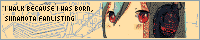

welcome to i walk because i was born, a siinamota (椎名もた) fanlisting!

siinamota (also known as Powapowa-p) is a japanese songwriter, composer and vocaloid producer. if you'd like to know more about him, feel free to visit the about page!
this fanlisting is for all people who enjoy siinamota through his music, art, lyrics, etc. come and join us!
this fanlisting is part of TheFanlistings.org!
no copyright infringement intended. all images used in layout and graphics belong to siinamota and their respecful artists! this fanlisting is not officially affiliated with siinamota and it is a non-profit creation from a fan. layout code belongs to doqmeat.com. part of doqmeat's siinamota fansite